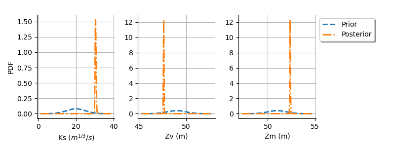
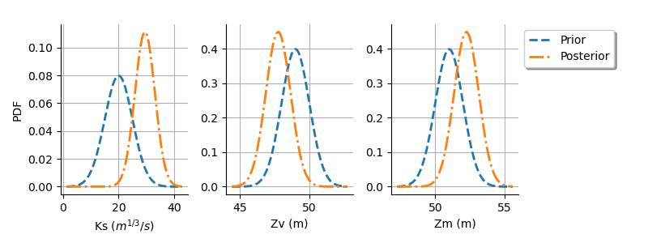

Note
Go to the end to download the full example code
Calibration of the flooding model¶
In this example we are interested in the calibration of the flooding model. We calibrate the parameters of a flooding model where only the difference between the downstream and upstream riverbed levels can be calibrated. This example shows how to manage the lack of identifiability in a calibration problem.
This example use least squares to calibrate the parametric model. Please read Code calibration for more details on code calibration and least squares. This study is relatively complicated: please read the calibration of the Chaboche mechanical model first if this is not already done. The observations that we use in this study are simulated with the script Generate flooding model observations.
Parameters to calibrate and observations¶
The variables of the model are:
 : Input. Observed.
: Input. Observed. ,
,  ,
,  : Input. Calibrated.
: Input. Calibrated. : Output. Observed.
: Output. Observed.
The vector of parameters to calibrate is:

In the description of the flooding model, we see that only one parameter can be identified. Hence, calibrating this model requires some regularization. We return to this topic when analyzing the singular values of the Jacobian matrix.
We consider a sample size equal to:

The observations are the couples  , i.e. each observation is a
couple made of the flowrate and the corresponding river height.
, i.e. each observation is a
couple made of the flowrate and the corresponding river height.
from openturns.usecases import flood_model
from matplotlib import pylab as plt
import openturns.viewer as otv
import numpy as np
import openturns as ot
ot.ResourceMap.SetAsUnsignedInteger("Normal-SmallDimension", 1)
ot.Log.Show(ot.Log.NONE)
Define the observations¶
In practice, we generally use a data set which has been obtained from
measurements.
This data set can be loaded using e.g. ImportFromCSVFile().
Here we import the data from the
FloodModel
class.
fm = flood_model.FloodModel()
Qobs = fm.data[:, 0]
Hobs = fm.data[:, 1]
nbobs = fm.data.getSize()
fm.data
Create the physical model¶
We define the model  which has 4 inputs and one output H.
which has 4 inputs and one output H.
The nonlinear least squares algorithm does not take into account for bounds in the parameters. Therefore, we ensure that the output is computed whatever the inputs. The model fails into two situations:
if
 ,
,if
 .
.
In these cases, we return an infinite number, so that the optimization algorithm does not get trapped.
def functionFlooding(X):
L = 5.0e3
B = 300.0
Q, K_s, Z_v, Z_m = X
alpha = (Z_m - Z_v) / L
if alpha < 0.0 or K_s <= 0.0:
H = np.inf
else:
H = (Q / (K_s * B * np.sqrt(alpha))) ** (3.0 / 5.0)
return [H]
g = ot.PythonFunction(4, 1, functionFlooding)
g = ot.MemoizeFunction(g)
g.setInputDescription(["Q ($m^3/s$)", "Ks ($m^{1/3}/s$)", "Zv (m)", "Zm (m)"])
g.setOutputDescription(["H (m)"])
Setting the calibration parameters¶
Define the value of the reference values of the  parameter.
In the Bayesian framework, this is called the mean of the prior normal
distribution.
In the data assimilation framework, this is called the background.
parameter.
In the Bayesian framework, this is called the mean of the prior normal
distribution.
In the data assimilation framework, this is called the background.
KsInitial = 20.0
ZvInitial = 49.0
ZmInitial = 51.0
thetaPrior = [KsInitial, ZvInitial, ZmInitial]
Create the parametric function¶
In the physical model, the inputs and parameters are ordered as presented in the next table. Notice that there are no parameters in the physical model.
Index |
Input variable |
|---|---|
0 |
Q |
1 |
Ks |
2 |
Zv |
3 |
Zm |
Index |
Parameter |
|---|---|
∅ |
∅ |
Table 1. Indices and names of the inputs and parameters of the physical model.
print("Physical Model Inputs:", g.getInputDescription())
print("Physical Model Parameters:", g.getParameterDescription())
Physical Model Inputs: [Q ($m^3/s$),Ks ($m^{1/3}/s$),Zv (m),Zm (m)]
Physical Model Parameters: []
In order to perform calibration, we have to define a parametric model,
with observed inputs and parameters to calibrate.
In order to do this, we create a ParametricFunction
where the parameters are Ks, Zv and Zm which have the indices 1, 2
and 3 in the physical model.
Index |
Input variable |
|---|---|
0 |
Q |
Index |
Parameter |
|---|---|
0 |
Ks |
1 |
Zv |
3 |
Zm |
Table 2. Indices and names of the inputs and parameters of the parametric model.
The following statement creates the calibrated function from the model.
The calibrated parameters , , are at
indices 1, 2, 3 in the inputs arguments of the model.
calibratedIndices = [1, 2, 3]
mycf = ot.ParametricFunction(g, calibratedIndices, thetaPrior)
Plot the Y observations versus the X observations.
graph = ot.Graph("Observations", "Q ($m^3/s$)", "H (m)", True)
# Plot the model before calibration
curve = mycf.draw(100.0, 4000.0).getDrawable(0)
curve.setLegend("Model, before calibration")
curve.setLineStyle(ot.ResourceMap.GetAsString("CalibrationResult-ObservationLineStyle"))
graph.add(curve)
# Plot the noisy observations
cloud = ot.Cloud(Qobs, Hobs)
cloud.setLegend("Observations")
cloud.setPointStyle(
ot.ResourceMap.GetAsString("CalibrationResult-ObservationPointStyle")
)
graph.add(cloud)
#
graph.setColors(ot.Drawable.BuildDefaultPalette(2))
graph.setLegendPosition("topleft")
view = otv.View(graph)

Wee see that the model does not fit to the data. The goal of calibration is to find which parameter best fit to the observations.
Calibration with linear least squares¶
The LinearLeastSquaresCalibration class performs the linear
least squares calibration by linearizing the model in the neighbourhood of
the reference point.
algo = ot.LinearLeastSquaresCalibration(mycf, Qobs, Hobs, thetaPrior, "SVD")
The run() method computes the
solution of the problem.
algo.run()
calibrationResult = algo.getResult()
The getParameterMAP() method returns the
maximum of the posterior distribution of .
thetaMAP = calibrationResult.getParameterMAP()
print("theta After = ", thetaMAP)
print("theta Before = ", thetaPrior)
theta After = [2.94129e+09,-3.26646e+24,-3.26646e+24]
theta Before = [20.0, 49.0, 51.0]
Print the true values of the parameters.
print("True theta")
print(" Ks = ", fm.trueKs)
print(" Zv = ", fm.trueZv)
print(" Zm = ", fm.trueZm)
True theta
Ks = 30.0
Zv = 50.0
Zm = 55.0
In this case, we see that there seems to be a great distance from the
reference value of to the optimum: the values seem too large in magnitude.
As we are going to see, there is an identification problem because the
Jacobian matrix is rank-degenerate.
Diagnostic of the identification issue¶
In this section, we show how to diagnose the identification problem.
The getParameterPosterior() method returns
the posterior normal distribution of .
distributionPosterior = calibrationResult.getParameterPosterior()
print(distributionPosterior)
Normal(mu = [2.94129e+09,-3.26646e+24,-3.26646e+24], sigma = [3.03385e+28,2.38506e+34,2.38506e+34], R = [[ 1 4.9106e-26 -4.9106e-26 ]
[ 4.9106e-26 1 1 ]
[ -4.9106e-26 1 1 ]])
We see that there is a large covariance matrix diagonal.
Let us compute a 95% confidence interval for the solution  .
.
print(
distributionPosterior.computeBilateralConfidenceIntervalWithMarginalProbability(
0.95
)[0]
)
[-6.78405e+28, 6.78405e+28]
[-5.33329e+34, 5.33329e+34]
[-5.33329e+34, 5.33329e+34]
The confidence interval is very large. In order to clarify the situation, we compute the Jacobian matrix of the model at the candidate point.
mycf.setParameter(thetaPrior)
thetaDim = len(thetaPrior)
jacobianMatrix = ot.Matrix(nbobs, thetaDim)
for i in range(nbobs):
jacobianMatrix[i, :] = mycf.parameterGradient(Qobs[i]).transpose()
print(jacobianMatrix[0:5, :])
5x3
[[ -0.0314759 0.15738 -0.15738 ]
[ -0.0731439 0.365719 -0.365719 ]
[ -0.104466 0.52233 -0.52233 ]
[ -0.131005 0.655027 -0.655027 ]
[ -0.153845 0.769225 -0.769225 ]]
The rank of the problem can be seen from the singular values of the Jacobian matrix.
print(jacobianMatrix.computeSingularValues())
[3.8102,5.32438e-11,3.00517e-26]
We can see that there are two singular values which are relatively close to zero.
This explains why the Jacobian matrix is close to being rank-degenerate.
Moreover, this allows one to compute the actual dimensionality of the problem.
The algorithm we use computes the singular values in descending order.
Moreover, by definition, the singular values are nonnegative.
We see that the first singular value is close to  and the others are very close to
and the others are very close to  in comparison.
This implies that the (numerical) rank of the Jacobian matrix is 1,
even if there are 3 parameters.
in comparison.
This implies that the (numerical) rank of the Jacobian matrix is 1,
even if there are 3 parameters.
Hence, only one parameter can be identified, be it ,
or .
The choice of the particular parameter to identify is free.
However, in hydraulic studies, the parameter is classically
calibrated while and are left constant.
Conclusion of the linear least squares calibration¶
There are several methods to solve the problem.
Given that the problem is not identifiable, we can use some regularization method. Two methods are provided in the library: the Gaussian linear least squares GaussianLinearCalibration and the Gaussian non linear least squares GaussianNonlinearCalibration.
We can change the problem, replacing it with a problem which is identifiable. In the flooding model, we can view
and as
constants and calibrate only.
In this example, we do not change the problem and see how the different methods perform.
Calibration with non linear least squares¶
The NonLinearLeastSquaresCalibration class performs the
non linear least squares calibration by minimizing the squared Euclidian norm
between the predictions and the observations.
algo = ot.NonLinearLeastSquaresCalibration(mycf, Qobs, Hobs, thetaPrior)
The run() method computes
the solution of the problem.
algo.run()
calibrationResult = algo.getResult()
Analysis of the results¶
The getParameterMAP() method returns the
maximum of the posterior distribution of .
thetaMAP = calibrationResult.getParameterMAP()
print(thetaMAP)
[27.566,47.0918,52.9082]
We can compute a 95% confidence interval of the parameter .
This confidence interval is based on bootstrap, based on a sample size equal
to 100 (as long as the value of the ResourceMap key
“NonLinearLeastSquaresCalibration-BootstrapSize” is unchanged).
This confidence interval reflects the sensitivity of the optimum
to the variability in the observations.
print(
ot.ResourceMap.GetAsUnsignedInteger(
"NonLinearLeastSquaresCalibration-BootstrapSize"
)
)
100
thetaPosterior = calibrationResult.getParameterPosterior()
print(thetaPosterior.computeBilateralConfidenceIntervalWithMarginalProbability(0.95)[0])
[27.2377, 28.1072]
[46.863, 47.2304]
[52.7696, 53.137]
In this case, the values of the parameters are quite accurately computed.
Increase the default number of points in the plots. This produces smoother spiky distributions.
ot.ResourceMap.SetAsUnsignedInteger("Distribution-DefaultPointNumber", 300)
graph = calibrationResult.drawObservationsVsInputs()
graph.setLegendPosition("topleft")
view = otv.View(graph)

We see that there is a good fit after calibration, since the predictions after calibration are close to the observations.
graph = calibrationResult.drawObservationsVsPredictions()
view = otv.View(graph)

We see that there is a much better fit after calibration, since the predictions are close to the diagonal of the graphics.
observationError = calibrationResult.getObservationsError()
print(observationError)
Normal(mu = 0.0185511, sigma = 0.110646)
We can see that the observation error has a sample mean close to zero and a sample standard deviation approximately equal to 0.11.
# sphinx_gallery_thumbnail_number = 5
graph = calibrationResult.drawResiduals()
graph.setLegendPosition("topleft")
view = otv.View(graph)

The analysis of the residuals shows that the distribution is centered on zero and symmetric. This indicates that the calibration performed well. Moreover, the distribution of the residuals is close to being Gaussian. This is an important hypothesis of the least squares method so that checking that this hypothesis occurs in the study is an important verification.
graph = calibrationResult.drawParameterDistributions()
view = otv.View(
graph,
figure_kw={"figsize": (8.0, 4.0)},
legend_kw={"bbox_to_anchor": (1.0, 1.0), "loc": "upper left"},
)
plt.subplots_adjust(right=0.8, bottom=0.2)

def plotDistributionGridPDF(distribution):
"""
Plot the marginal and bi-dimensional iso-PDF on a grid.
Parameters
----------
distribution : ot.Distribution
The distribution.
Returns
-------
grid : ot.GridLayout(dimension, dimension)
The grid of plots.
"""
dimension = distribution.getDimension()
grid = ot.GridLayout(dimension, dimension)
for i in range(dimension):
for j in range(dimension):
if i == j:
distributionI = distribution.getMarginal([i])
graph = distributionI.drawPDF()
else:
distributionJI = distribution.getMarginal([j, i])
graph = distributionJI.drawPDF()
graph.setLegends([""])
graph.setTitle("")
if i < dimension - 1:
graph.setXTitle("")
if j > 0:
graph.setYTitle("")
grid.setGraph(i, j, graph)
grid.setTitle("Iso-PDF values")
return grid
Plot the PDF values of the distribution of the optimum parameters.
grid = plotDistributionGridPDF(thetaPosterior)
view = otv.View(
grid,
figure_kw={"figsize": (6.0, 6.0)},
legend_kw={"bbox_to_anchor": (1.0, 1.0), "loc": "upper left"},
)
plot_space = 0.5
plt.subplots_adjust(wspace=plot_space, hspace=plot_space)

Gaussian linear calibration¶
The standard deviation of the observations.
sigmaH = 0.5 # (m^2)
Define the covariance matrix of the output Y of the model.
errorCovariance = ot.CovarianceMatrix(1)
errorCovariance[0, 0] = sigmaH ** 2
Define the covariance matrix of the parameters to calibrate.
sigmaKs = 5.0
sigmaZv = 1.0
sigmaZm = 1.0
#
sigma = ot.CovarianceMatrix(3)
sigma[0, 0] = sigmaKs ** 2
sigma[1, 1] = sigmaZv ** 2
sigma[2, 2] = sigmaZm ** 2
print(sigma)
[[ 25 0 0 ]
[ 0 1 0 ]
[ 0 0 1 ]]
The GaussianLinearCalibration class performs Gaussian
linear calibration by linearizing the model in the neighbourhood of the prior.
algo = ot.GaussianLinearCalibration(
mycf, Qobs, Hobs, thetaPrior, sigma, errorCovariance, "SVD"
)
The run() method computes
the solution of the problem.
algo.run()
calibrationResult = algo.getResult()
Analysis of the results¶
The getParameterMAP() method returns the
maximum of the posterior distribution of .
thetaMAP = calibrationResult.getParameterMAP()
print(thetaMAP)
[24.4058,48.1188,51.8812]
graph = calibrationResult.drawObservationsVsInputs()
graph.setLegendPosition("topleft")
view = otv.View(graph)

We see that the output of the model after calibration is closer to the observations.
graph = calibrationResult.drawObservationsVsPredictions()
view = otv.View(graph)

In this case, the fit is satisfactory after calibration.
graph = calibrationResult.drawResiduals()
graph.setLegendPosition("topleft")
view = otv.View(graph)

We see that the distribution of the residual is centered on zero after calibration.
The getParameterPosterior() method
returns the posterior normal distribution of .
distributionPosterior = calibrationResult.getParameterPosterior()
print(distributionPosterior)
Normal(mu = [24.4058,48.1188,51.8812], sigma = [4.09428,0.818856,0.818856], R = [[ 1 0.491369 -0.491369 ]
[ 0.491369 1 0.491369 ]
[ -0.491369 0.491369 1 ]])
We can compute a 95% credibility interval of the parameter .
print(
distributionPosterior.computeBilateralConfidenceIntervalWithMarginalProbability(
0.95
)[0]
)
[14.8044, 34.0072]
[46.1986, 50.0391]
[49.9609, 53.8014]
We see that there is a large uncertainty on the value of the parameter
which can be as small as  and as large as
and as large as  .
.
We can compare the prior and posterior distributions of the marginals of .
graph = calibrationResult.drawParameterDistributions()
view = otv.View(
graph,
figure_kw={"figsize": (8.0, 4.0)},
legend_kw={"bbox_to_anchor": (1.0, 1.0), "loc": "upper left"},
)
plt.subplots_adjust(right=0.8)

The two distributions are different, which shows that the calibration is sensitive to the observations (if the observations were not sensitive, the two distributions were superimposed). Moreover, the two distributions are quite close, which implies that the prior distribution has played a role in the calibration (otherwise the two distributions would be completely different, indicating that only the observations were taken into account).
Plot the PDF values of the distribution of the optimum parameters.
grid = plotDistributionGridPDF(thetaPosterior)
view = otv.View(
grid,
figure_kw={"figsize": (6.0, 6.0)},
legend_kw={"bbox_to_anchor": (1.0, 1.0), "loc": "upper left"},
)
plot_space = 0.5
plt.subplots_adjust(wspace=plot_space, hspace=plot_space)

Gaussian nonlinear calibration¶
The GaussianNonLinearCalibration class performs Gaussian
nonlinear calibration.
algo = ot.GaussianNonLinearCalibration(
mycf, Qobs, Hobs, thetaPrior, sigma, errorCovariance
)
The run() method computes the
solution of the problem.
algo.run()
calibrationResult = algo.getResult()
Analysis of the results¶
The getParameterMAP() method returns the
maximum of the posterior distribution of .
thetaMAP = calibrationResult.getParameterMAP()
print(thetaMAP)
[29.4528,47.7599,52.2401]
graph = calibrationResult.drawObservationsVsInputs()
graph.setLegendPosition("topleft")
view = otv.View(graph)

We see that the output of the model after calibration is in the middle of the observations: the calibration seems correct.
graph = calibrationResult.drawObservationsVsPredictions()
view = otv.View(graph)

The fit is excellent after calibration. Indeed, the cloud of points after calibration is on the diagonal.
graph = calibrationResult.drawResiduals()
view = otv.View(
graph,
figure_kw={"figsize": (8.0, 4.0)},
legend_kw={"bbox_to_anchor": (1.0, 1.0), "loc": "upper left"},
)
plt.subplots_adjust(right=0.6)

We see that the distribution of the residual is centered on zero. This is a proof that the calibration did perform correctly.
The getParameterPosterior() method
returns the posterior normal distribution of .
distributionPosterior = calibrationResult.getParameterPosterior()
We can compute a 95% credibility interval of the parameter .
print(
distributionPosterior.computeBilateralConfidenceIntervalWithMarginalProbability(
0.95
)[0]
)
[29.9114, 30.9625]
[47.5676, 47.7]
[52.3, 52.4324]
We see that there is a small uncertainty on the value of all parameters.
We can compare the prior and posterior distributions of the marginals of .
graph = calibrationResult.drawParameterDistributions()
view = otv.View(
graph,
figure_kw={"figsize": (8.0, 4.0)},
legend_kw={"bbox_to_anchor": (1.0, 1.0), "loc": "upper left"},
)
plt.subplots_adjust(right=0.8)

The two distributions are very different, with a spiky posterior distribution. This shows that the calibration is very sensitive to the observations.
Plot the PDF values of the distribution of the optimum parameters.
grid = plotDistributionGridPDF(thetaPosterior)
view = otv.View(
grid,
figure_kw={"figsize": (6.0, 6.0)},
legend_kw={"bbox_to_anchor": (1.0, 1.0), "loc": "upper left"},
)
plot_space = 0.5
plt.subplots_adjust(wspace=plot_space, hspace=plot_space)

Tuning the posterior distribution estimation¶
The “GaussianNonLinearCalibration-BootstrapSize” key of the
ResourceMap controls the posterior distribution estimation.
If “GaussianNonLinearCalibration-BootstrapSize” > 0 (by default it is equal to 100), then a bootstrap resample algorithm is used to see the dispersion of the MAP estimator. This allows one to see the variability of the estimator with respect to the finite noisy observation sample.
If “GaussianNonLinearCalibration-BootstrapSize” is zero, then the Gaussian linear calibration estimator is used (i.e. the
GaussianLinearCalibrationclass) at the optimum. This is called the Laplace approximation.
The default value of the key is nonzero, meaning that bootstrap is used. This can be costly in some cases, because it requires to repeat the optimization several times.
print(ot.ResourceMap.GetAsUnsignedInteger("GaussianNonLinearCalibration-BootstrapSize"))
100
We must configure the key before creating the object (otherwise changing the parameter does not change the result).
ot.ResourceMap.SetAsUnsignedInteger("GaussianNonLinearCalibration-BootstrapSize", 0)
algo = ot.GaussianNonLinearCalibration(
mycf, Qobs, Hobs, thetaPrior, sigma, errorCovariance
)
algo.run()
calibrationResult = algo.getResult()
graph = calibrationResult.drawParameterDistributions()
view = otv.View(
graph,
figure_kw={"figsize": (8.0, 4.0)},
legend_kw={"bbox_to_anchor": (1.0, 1.0), "loc": "upper left"},
)
plt.subplots_adjust(right=0.8)

As we can see, this does not change much the posterior distribution, which remains spiky.
Plot the PDF values of the distribution of the optimum parameters.
grid = plotDistributionGridPDF(thetaPosterior)
view = otv.View(
grid,
figure_kw={"figsize": (6.0, 6.0)},
legend_kw={"bbox_to_anchor": (1.0, 1.0), "loc": "upper left"},
)
plot_space = 0.5
plt.subplots_adjust(wspace=plot_space, hspace=plot_space)
otv.View.ShowAll()

Reset default settings
ot.ResourceMap.Reload()
Total running time of the script: ( 0 minutes 8.891 seconds)